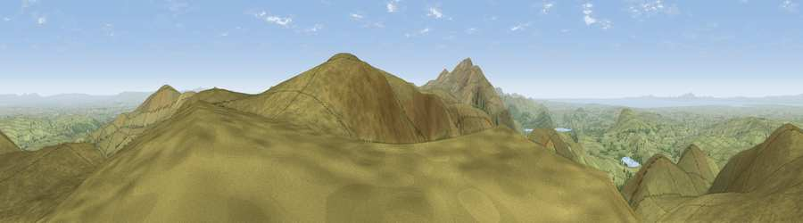

Little Sca Fell
#1257 in England · top 11% of its area beats it · near UldaleThe view, rendered

A 360° render of this exact spot computed from the terrain model, tree cover and land cover — summer colours, afternoon light, calibrated against photographs of famous viewpoints. Real trees, hedges and buildings will differ in detail.
The panorama
Grey silhouette: terrain skyline in each direction (720 bearings, Earth curvature and refraction included). Dashed green: skyline with trees (+15 m) and buildings (+8 m) as obstacles. Blue strip: how far the ground is visible on each bearing.
Where the view opens
Wedge length = distance to the farthest visible ground on that bearing (vegetation-aware). Rings at 10, 25 and 50 km.
What fills the view
93% grassland · 3% woodland · 2% water · 1% cropland
Angular shares of the visible panorama (visual magnitude), not map area. Landscape diversity 0.15 (0–1 Shannon).
Key numbers
More beautiful places nearby
The staircase of upgrades: each row has a higher view potential than everything closer. Driving times are estimates from straight-line distance, calibrated against real road routing — check an actual route before setting out.
| Place | Direction | Drive | Score |
|---|---|---|---|
| High Pike | ENE · 3 km | ~7 min | 79.5 |
| Viewpoint near Bassenthwaite | SSW · 5 km | ~11 min | 82.8 |
| Skiddaw South Top | SSW · 6 km | ~13 min | 85.8 |
| Viewpoint near Applethwaite | SSW · 7 km | ~15 min | 86.7 |
| Ullock Pike | SW · 7 km | ~15 min | 89.4 |
| Long Side | SW · 7 km | ~15 min | 89.5 |
| Viewpoint near Finsthwaite | SSE · 47 km | ~67 min | 90.3 |
| The Knoll | S · 447 km | ~418 min | 91.0 |
54.69801, -3.10357 · source: osm peak · position refined by local search. Computed location — check access rights before visiting.